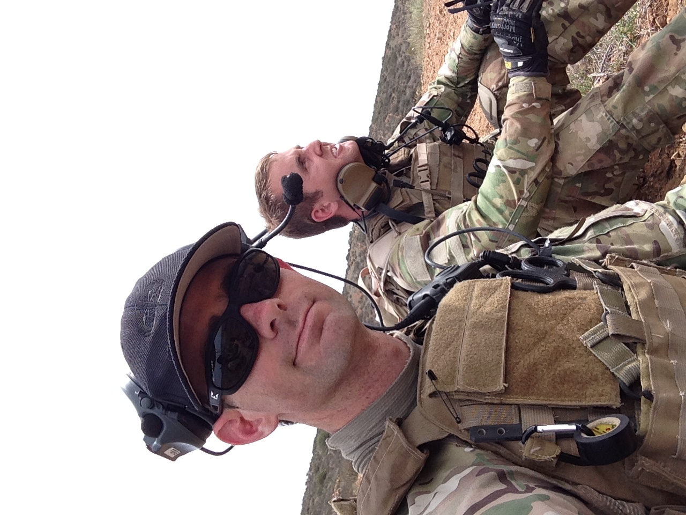
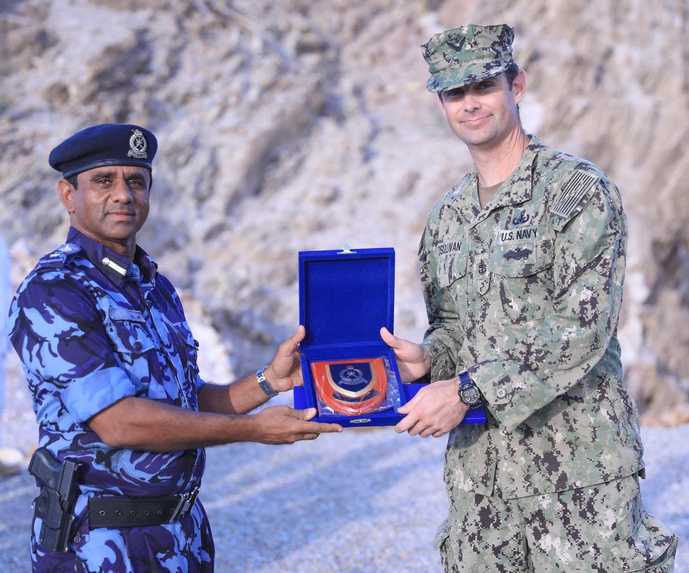
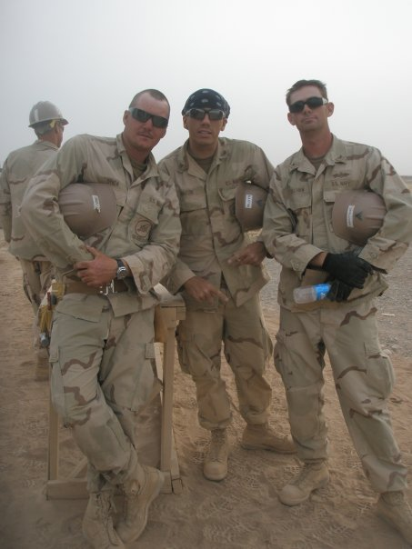

- 
- 
- 
I joined the Navy right out of high school, December 2004. Growing up in a military family seemed like my only option at the time.
My first five years were with the Navy Seabees, a naval military unit devoted to construction whether it is in a permissive or non-permissive environment.
Although I loved building things, I felt a drive to do something more that moved me to a different path. I followed my fathers foot steps strived to become an Explosive Ordnance Disposal Technician.
Over the next 15 plus years I learned demolition operations and basically how not to make military ordnance and improvised explosive items not go BOOM!
By the end of it all, 20 plus years in 2025, I will have been to Guam, Djibouti Africa, Ethiopia Africa, Japan, Brazil, Various places in the Middle east, Thailand, and Sri Lanka.
Click picture below for rotating pics!